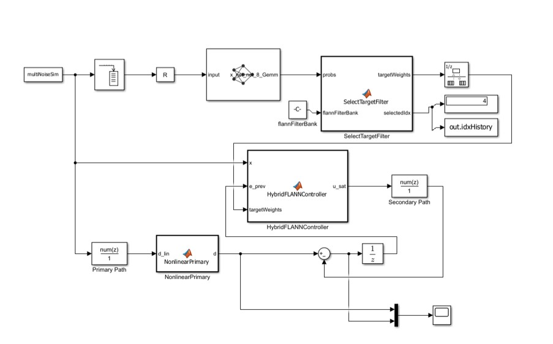
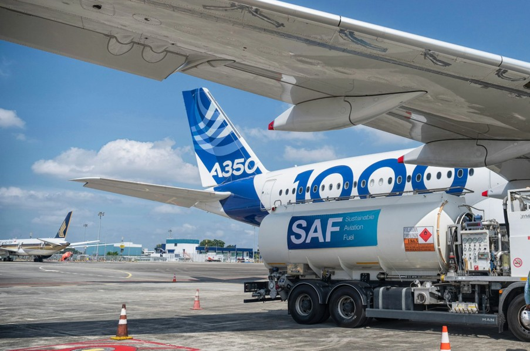
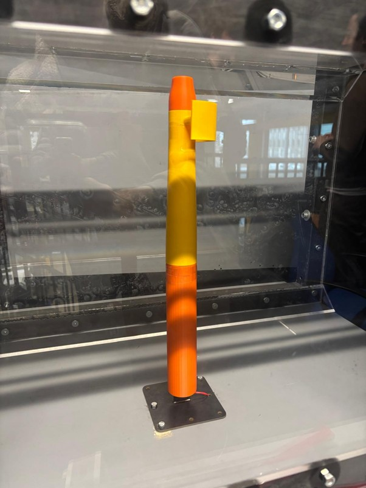
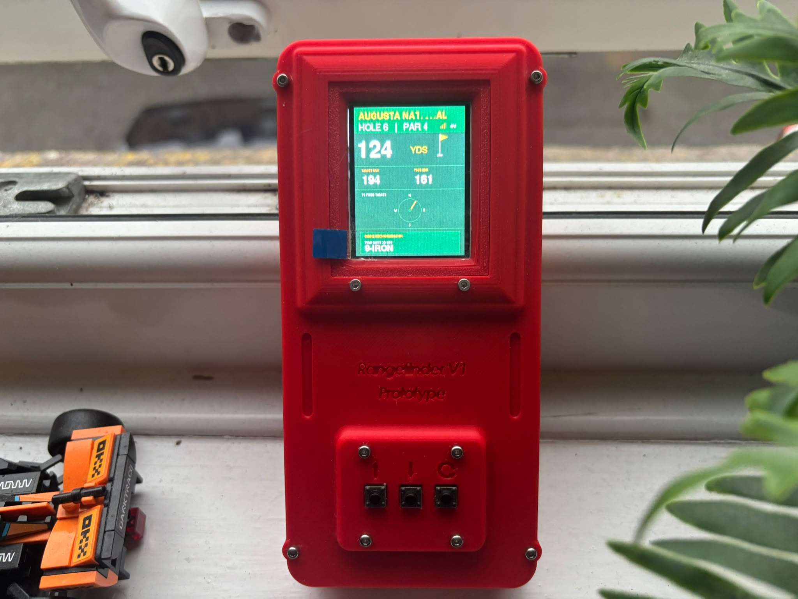
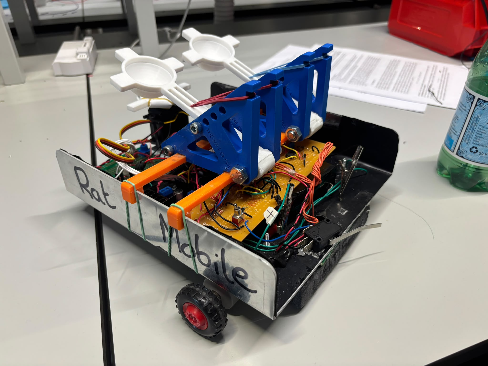
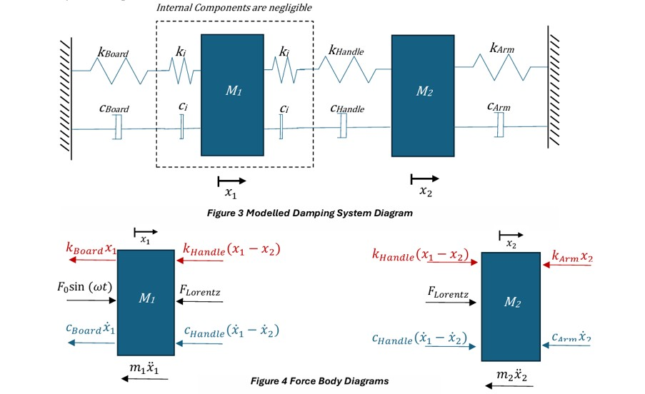
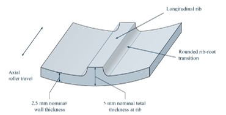
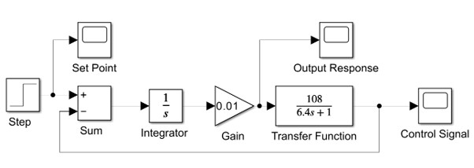

Machine Learning in Active Noise Control (SFANC)
Hybrid Spatially Filtered Active Noise Control framework integrating a PyTorch ONNX filter-selector network with nonlinear FLANN filter banks and Simulink cabin acoustic plant models.

Airbus SAF Sustainability Taxonomy & Fischer-Tropsch Pathway
Industry consultancy with Airbus Filton establishing a quantitative "rainbow" classification taxonomy for Sustainable Aviation Fuel, specializing in FT-SPK life-cycle carbon intensity, feedstock ethics, and ASTM D7566 pathways.

VIV Micro-Energy Extraction & Aerofoil Deflection
Feasibility investigation combining transient 2D CFD (ANSYS Fluent), mathematical dynamic beam modeling, and low-speed wind tunnel testing for micro-energy harvesting.

Handheld GPS Golf Rangefinder
Compact prototype display unit built with an Arduino Nano, ST7789V 2-inch LCD, GNSS receiver, and custom TP4056 3.7V Li-ion power management inside a 3D-printed shell.

Private Pilot Licence (PPL) Flight Training
Active flight training developing situational and 3D spatial awareness in busy controlled and uncontrolled airspace, navigating alongside commercial airliner traffic and sharing active airspace with the RAF Red Arrows.
STM32 Closed-Loop Thermal Control System
Embedded thermal plant modeling and closed-loop PID controller implementation on an STM32 microcontroller for precision heating regulation and disturbance rejection.
Applied Engineering Machine Learning
Design, training, and validation of supervised learning models and feature extraction pipelines applied to engineering datasets and predictive diagnostics.

Autonomous Line-Following & Ball-Launching Robot
Autonomous track vehicle built on a water-jet cut aluminum chassis with a 7611 op-amp LDR Wheatstone bridge, STM32 Nucleo Mbed firmware, and dual servo-triggered catapults.

Vibration Saw Dynamic & Harmonic Modeling
Developed the core mathematical foundation modeling multi-DOF equations of motion, natural frequencies, damping ratios, and hand-arm vibration transmissibility.

Turbulent NACA0012 Aerofoil CFD Analysis
ANSYS Fluent $k$-$\omega$ SST simulation of incompressible water flow ($10\text{ m/s}$) across $0^\circ–20^\circ$ AoA, evaluating coarse vs. fine structured mesh independence ($y^+ < 1$) and aerodynamic stall onset at $16^\circ$.

SR-30 Turbojet Thermodynamic Performance Analysis
Ideal Brayton cycle $T$-$s$ and $P$-$v$ state modeling of the Turbine Technologies SR-30 turbojet at $126.612\text{ N}$ peak thrust ($79,931\text{ RPM}$), deriving compressor/turbine specific work, work ratio ($0.632$), and thermal efficiency ($39.53\%$).

Flow-Forming Defect Diagnostics in 2195 Al-Li
Root-cause mechanical and metallurgical analysis of circumferential rib-root cracking in flow-formed AA2195-T6 LH2 cryotanks ($20\text{ K}$), quantifying $24\%$ local thinning ($1.9\text{ mm}$), $27.4\%$ true plastic strain, and a $31.5\%$ hoop stress spike ($94.7\text{ MPa}$).

Closed-Loop Automotive Cruise Control
Laplace transfer function derivation ($G(s) = \frac{108}{6.4s+1}$) and Simulink/MATLAB dynamic simulation comparing closed-loop Proportional ($K_p=1$) and Integral ($K_i=0.0005$) step responses, disturbance rejection, and steady-state error.

Engineering Portfolio Website Production
Designed and built a custom static portfolio website hosted on GitHub Pages using semantic HTML5, responsive CSS Grid/Flexbox layouts, MathJax equation typesetting, and a touch/mouse drag carousel.

Lancaster University A-Level Academic Scholarship
Awarded a merit-based academic scholarship by Lancaster University in recognition of strong A-Level examination results upon matriculating into the MEng Engineering program.